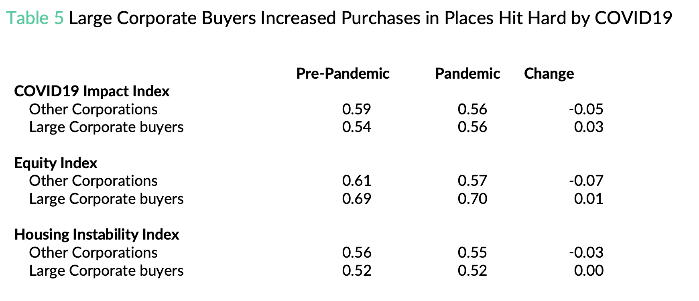

Overall, we find that after a brief pause in Q2 of 2020, large corporate investors operating in Miami, Tampa and Atlanta increased their purchases during the pandemic, and by summer of 2021, were purchasing homes nearly twice as quickly than in 2019. We examine both pricing and volume of sales, and see no evidence that investment in garden style or multifamily increased, or that purchases were focused in opportunity zones in our study areas. Instead, all of the increases came from the single family housing stock. Large corporate investor purchases were divided evenly between firms that operate as trading platforms and firms that operate single family rental or rent-to-own. Single family rental and rent-to-own firms focused almost exclusively in Atlanta, whereas trading platforms bought large volumes of homes in each study area we observed.

We confirm previous research which has found that large corporate single family rental and rent-to-own investors purchase in highly segregated, predominantly Black and non-White Hispanic areas, while avoiding high poverty neighborhoods and areas with low levels of owner-occupied housing stock. After the pandemic began, these large corporate investors increased purchases in places with high housing instability risk, and those hit hard by COVID-19. Large corporate trading platforms demonstrated a different pattern of buying. These firms purchased homes in areas with fewer people of color overall, and after the pandemic began, reduced purchases in neighborhoods that were impacted by the COVID19 pandemic, or had high housing instability.
See full report for more detail.